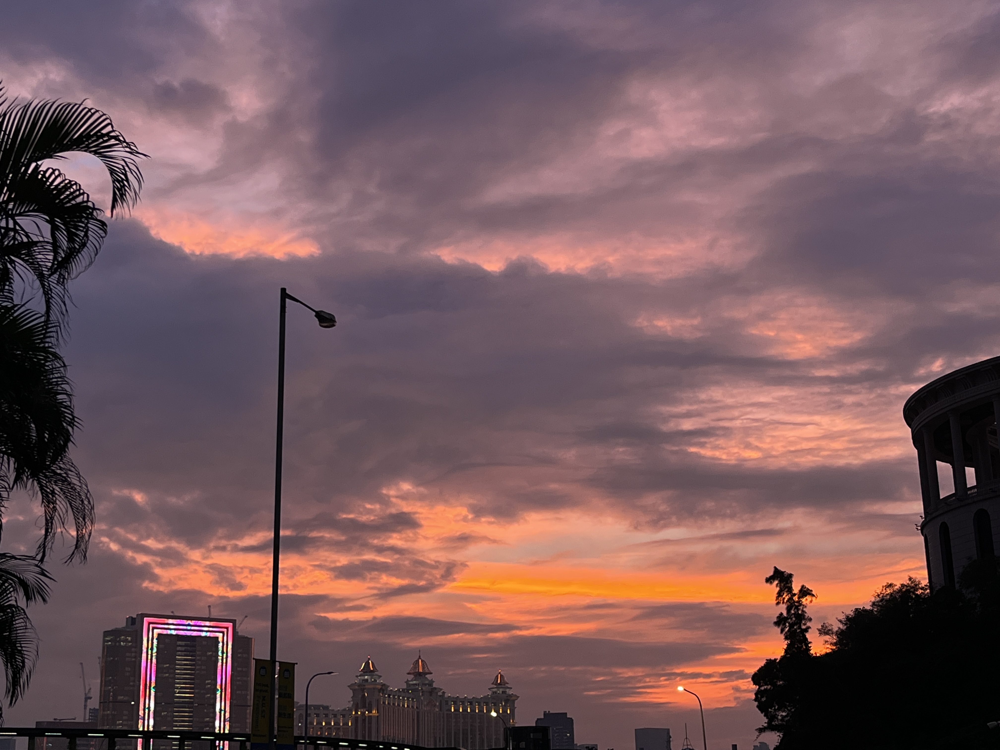

About Me

Full Name：Yang Zixuan
Gender：girl
Birthday： November 28th
Speciality：business administration
Interest：Eating and exploring restaurants
School：Macau University of Science and Technology
Lifestyle Hobbies
Photograph： The bits and pieces of life need to be recorded, and I have developed the habit of casually taking photos to record life. Gradually, I have also improved my photography skills. The representative of life is a certain moment, and recording it will definitely leave a lasting impression.
Making delicious food： I often make desserts, and when I'm in a bad mood, I can listen to desserts to heal. I also share the desserts I make with my friends, and I'm happy to hear their positive reviews of the desserts I make.